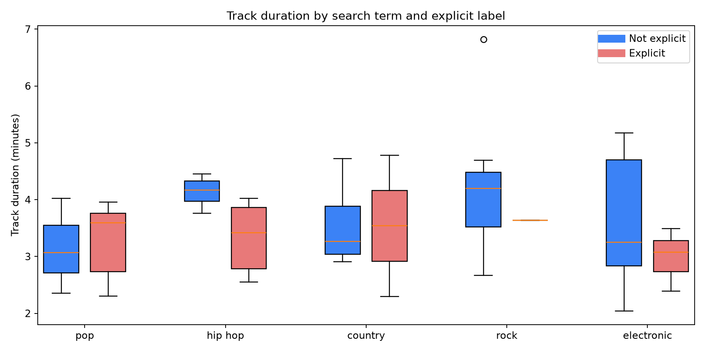
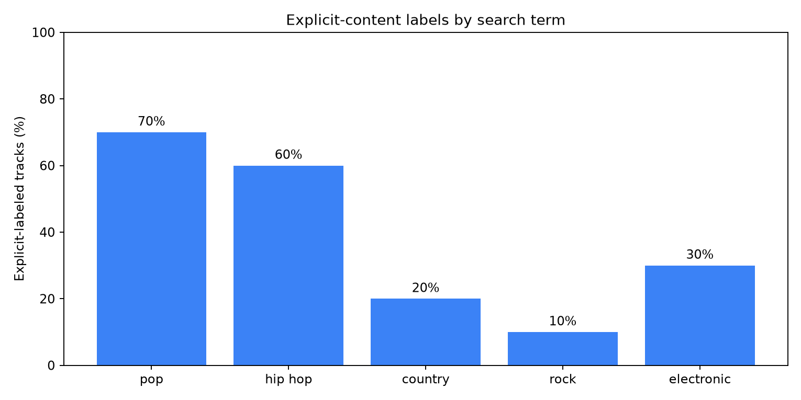
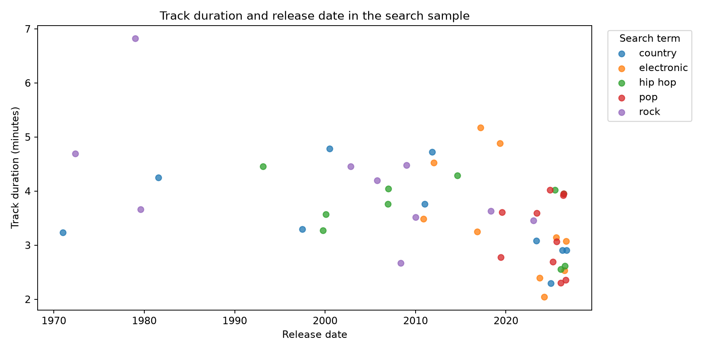

Exploratory Data Analysis · Python · Spotify API
Exploring Spotify Track Metadata
An exploratory look at track duration, explicit-content labels, and release dates across five Spotify search-term groups.
Project Overview
I used the Spotify Web API to collect track metadata and explore how song characteristics vary across search results. The dataset contains up to 10 tracks from each of five search terms: pop, hip hop, country, rock, and electronic.
Using Python, pandas, and Matplotlib, I cleaned the data, summarized key attributes, and built visualizations to identify patterns worth investigating further.
Data Collection and Preparation
The analysis focuses on track names, artists, search terms, explicit-content labels, durations, and release dates. I converted durations from milliseconds to minutes, standardized explicit labels, and parsed release dates for visualization.
Sampling note: These are Spotify search-result groups, not verified musical genres. The sample is small and nonrandom, so the findings describe the collected tracks rather than the full Spotify catalog.
Track Duration
I compared track durations within each search-term group, separating tracks by their explicit-content labels. The box plots show differences in the distribution and spread of durations across the collected records.

Explicit-Content Labels
Next, I calculated the percentage of tracks marked explicit within each search-term group. This provides a straightforward comparison of Spotify's metadata labels across the sample.

Release Dates and Track Length
I also plotted track duration against release date to examine how these attributes appear together in the sample. This view helps identify individual observations and possible patterns for a larger follow-up analysis.

Key Takeaways
This project strengthened my experience with API-based data collection, cleaning, exploratory analysis, and communicating results through visualizations. It also reinforced the importance of understanding how a dataset was sampled before making general claims.
The analysis does not evaluate Spotify popularity scores, and the explicit-content flag is treated as a platform label rather than an independent assessment of lyrics.
Limitations and Next Steps
The dataset is limited to a small number of search results. Tracks may appear in multiple groups, and search rankings can influence which songs are included. A larger, documented sampling strategy and duplicate-track review would support stronger comparisons.